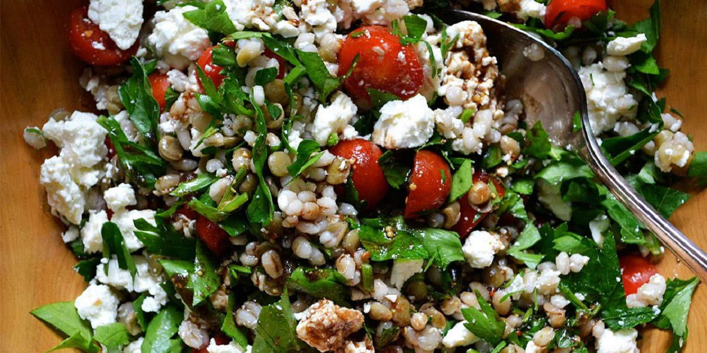

Tomato & Feta Barley
Recipe Specification
Ingredients List
| Ingredients | Quantity |
|---|---|
| Cherry Tomatoes | 1 Punnet |
| Red Onion | 1x1 |
| Olive Oil | 45ml |
| Basil | 40g |
| Pearl Barley | 200g |
| Feta Cheese | 200g |
| Salt & Pepper | To Taste |
Yield: 4-6 portions
Preparation
- Cut cherry tomatoes in half.
- Peel and finely slice red onion.
- Pick basil leaves.
- Cut feta into 1cm cubes.
- Coat tomatoes in 30ml of olive oil before seasoning with salt and pepper and placing on a baking tray lined with grease proof paper.
- Pre-heat oven to 160’C.
Cooking Instructions
- Place baking tray in the oven for 15-20 minutes until tomatoes are golden brown.
- Whilst tomatoes are drying out, place a saucepan on a medium/high heat and add pearl barley and 400ml of water. Bring to the boil and reduce to the simmer for 15 minutes.
- Place a frying pan over a medium/high heat and add 20ml of olive oil .Once hot, add sliced onions and sauté for 4-5 minutes before removing from heat. Allow to cool to room temperature and set aside.
- Once pearl barley is cooked, remove from heat, drain and run under cold water in a colander.
- Remove tomatoes from oven and allow to cool to room temperature.
- Mix barley, tomatoes, onions, feta cheese, basil leaves, remaining olive oil and season to taste with salt and pepper.

Serving Suggestions
Serve with a leafy salad, pitta bread or houmous.
Storing instructions
Store in an airtight contain before placing in the fridge. Consume with 4 days of making.